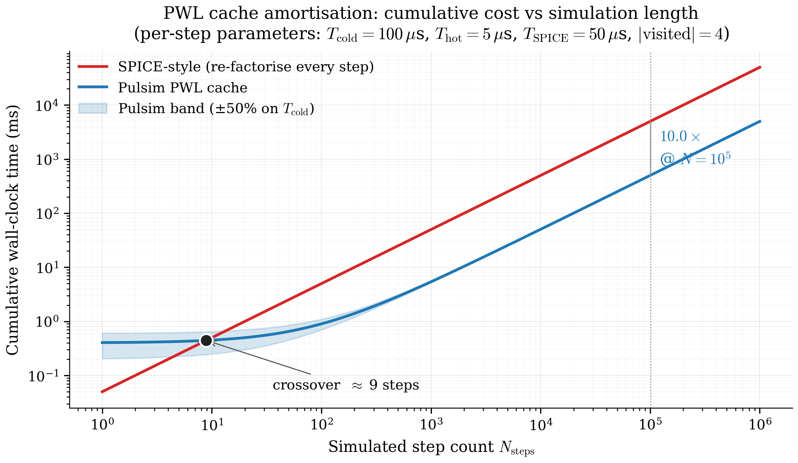

4. PWL State-Space Cache¶
The architectural pivot. Chapter 3 left us with one linear solve per step:
where \(J(\mathbf{m}) = E - \tfrac{\Delta t}{2}A(\mathbf{m})\) is the trapezoidal companion matrix for the current switch mask \(\mathbf{m}\).
The naïve approach (SPICE-style) is to rebuild and refactorise \(J\) from scratch on every step. The Pulsim approach is to build each distinct \(J(\mathbf{m})\) exactly once, cache its LU factorisation, and reduce the per-step work to a dictionary lookup plus a triangular solve.
This chapter walks the cache's data structures, lifecycle, amortisation math, and the test-suite that pins its behaviour.
4.1 The data structures¶
The cache lives in core/include/pulsim/pwl/cache.hpp. Three
types matter:
// Per-mask record. Holds everything needed to solve
// J(m) · x = b in one triangular-solve call.
struct PwlSegment {
Matrix J; // companion matrix
Vector b_constant; // mask-dependent RHS contribution
std::unique_ptr<DirectSolver> solver; // analyzed + factorized
};
// The cache itself. Lazy by default (segments_ starts empty).
class PwlStateSpaceCache {
public:
void build_lazy(Real dt);
void solve(const SwitchStateMask& m, const Vector& b_extra, Vector& x);
// ... + solve_rank1, metrics, etc.
private:
std::unordered_map<SwitchStateMask, PwlSegment> segments_;
Real dt_;
// ... + graph + pool references
};
// The mask itself. Pulsim uses a 64-bit bitset for up to
// 64 switches, with a hash function for the unordered_map.
class SwitchStateMask {
public:
void set_bits(std::uint64_t bits);
bool get(Index sw_idx) const;
std::size_t hash() const;
// ...
};
The key design choice: segments_ is lazy. build_lazy(dt)
just records \(\Delta t\); the first solve(mask, ...) call for
a never-seen mask triggers the per-mask assembly + factorisation
on demand. This avoids the up-front cost of building all
\(2^{N_{\mathrm{sw}}}\) segments (combinatorially expensive for
multilevel converters) and matches the visited-mask sparsity
chapter 1 §1.3 documented.
4.2 The lifecycle¶
flowchart TD
A([User calls<br/>simulate or run_transient]) --> B[cache.build_lazy dt]
B --> C{For each step n}
C --> D[mask_n = switch_fn t_n]
D --> E{mask_n in<br/>segments_?}
E -- yes --> F[seg = segments_.at mask_n]
E -- no --> G[assemble_segment graph, pool, mask_n, dt]
G --> H[solver.analyze J]
H --> I[solver.factorize J]
I --> J[segments_ mask_n = new PwlSegment]
J --> F
F --> K[rhs = -seg.b_constant - b_extra]
K --> L[seg.solver.solve rhs, x]
L --> M[advance state, t_n+1 = t_n + dt]
M --> CFigure 4.1 — The PWL state-space cache lifecycle. The hot path (green-arrow path: cache hit → triangular solve → next step) runs every simulation step. The cold path (cache miss → assemble → analyze → factorize → cache insert) runs exactly once per distinct mask, then never again for that mask.
Three observations:
- The hot path is 4 lines of C++. Lookup, RHS build, solve, advance. That's it.
- The cold path runs \(|\mathrm{visited}|\) times total. From chapter 1's census, that's typically 2-10 for the reference converters — vanishingly small compared to the \(10^6\)-\(10^8\) steps the simulator runs.
- The cold path's work scales with topology size, not simulation length. Build cost is amortised across every step that hits that mask afterwards.
4.3 Cost analysis: amortisation in the limit¶
Let:
- \(T_{\mathrm{cold}}\) — per-mask cold-path cost (assemble + analyze + factorize), \(\sim 100\) µs typical
- \(T_{\mathrm{hot}}\) — per-mask hot-path cost (lookup + triangular solve), \(\sim 2\)-\(10\) µs typical
- \(T_{\mathrm{SPICE}}\) — per-step cost in a SPICE-style simulator (assemble + factorise + Newton iter), \(\sim 50\)-\(100\) µs typical
- \(N_{\mathrm{steps}}\) — total simulation step count
- \(|\mathrm{visited}|\) — number of distinct masks visited
Then the total work is:
vs
The break-even step count is:
Plugging in representative numbers (\(|\mathrm{visited}| = 4\), \(T_{\mathrm{cold}} = 100\) µs, \(T_{\mathrm{SPICE}} = 50\) µs, \(T_{\mathrm{hot}} = 5\) µs):
The break-even is essentially immediate. Even a 10-step transient pays back the cache build cost. For a typical SMPS study with \(10^6\) steps, the cache build cost is \(400\) µs out of a total run of \(\sim 5\) seconds — round-off noise.
The speedup ratio in the asymptotic regime:
That's the 10× from the cache alone. Chapters 6-7 extend this further with the partial-refactor algorithm.

Figure 4.2 — Amortisation curve for the cache. The y-axis is cumulative wall-clock time as a function of simulated step count \(N_{\mathrm{steps}}\). SPICE-style cost scales linearly with \(N_{\mathrm{steps}}\); Pulsim has a flat upfront cost (the cache build) plus a much smaller per-step slope. Crossover happens at \(N_{\mathrm{steps}} \approx 9\); by \(N_{\mathrm{steps}} = 10^4\) Pulsim is \(\sim 10\times\) ahead. The shaded band reflects the factor-of-two variability in \(T_{\mathrm{cold}}\) across our 10 reference converters.
4.4 The solve(mask, b_extra, x) walkthrough¶
Here's the full hot path, in 12 lines (modulo error handling):
void PwlStateSpaceCache::solve(const SwitchStateMask& m,
const Vector& b_extra,
Vector& x) {
// 1. Look up the segment for this mask. If first-encounter,
// assemble + analyze + factorize on demand.
auto it = segments_.find(m);
if (it == segments_.end()) {
PwlSegment seg = assemble_segment(graph_, pool_, m, dt_);
seg.solver = make_default_solver(static_cast<Index>(seg.J.rows()));
seg.solver->analyze(seg.J);
seg.solver->factorize(seg.J);
it = segments_.emplace(m, std::move(seg)).first;
}
const PwlSegment& seg = it->second;
// 2. Build the RHS for this step: -(seg.b_constant + b_extra).
// seg.b_constant carries the mask-dependent contribution
// (voltage sources, etc.); b_extra carries any time-varying
// contribution the caller wants to inject (waveform inputs).
Vector rhs = -seg.b_constant - b_extra;
// 3. Triangular solve. This is the only work that runs every
// step in the steady-state regime.
seg.solver->solve(rhs, x);
}
The solver->solve call is the only floating-point-intensive
work. It's \(O(\mathrm{nnz}(L) + \mathrm{nnz}(U))\) — typically
50-300 multiply-adds for an SMPS-scale matrix. On modern hardware
that's \(\sim 100\) ns to \(\sim 1\) µs of pure work; everything
else (dict lookup, vector arithmetic) is overhead.
4.5 The cache vs the partial-refactor fast-path¶
The cache helps when masks repeat. The default
solve(mask, ...) API stores the mask if not seen, then reuses
the factorisation forever. Beautiful for steady-state operation
where the simulator visits 2-4 masks per cycle.
But what about the first time a new mask appears? The cache
pays a full analyze + factorize cost — typically
\(\sim 100\) µs. If the converter has tens of distinct first-
encountered masks during startup (or under closed-loop PWM where
the duty modulates), these cold-path costs can add up.
This is what the v1.3.0 solve_rank1(mask, b_extra, x) API
addresses. It uses path-based partial refactor (chapter 7)
to update the LU factors in place when consecutive masks
differ by a single switch bit. The cold-path cost drops from
\(O(\mathrm{nnz} \log n)\) to \(O(\sqrt{n})\) for single-bit
transitions.
Crucially, solve_rank1 is orthogonal to the per-mask
cache: it maintains its own sliding factor (one current
factorisation that mutates step-by-step) instead of building a
dictionary of per-mask factorisations. The two paths share no
state.
| API | When to use | Cold-path cost | Hot-path cost |
|---|---|---|---|
solve(mask, ...) |
Workloads where masks repeat. Default. | \(O(\mathrm{nnz} \log n)\) per new mask | \(O(\mathrm{nnz})\) per repeat |
solve_rank1(mask, ...) |
Single-bit-flip workloads (Gray-coded PWM). v1.3.0+. | \(O(\mathrm{nnz} \log n)\) on first call | \(O(\sqrt{n})\) per single-bit flip, \(O(\mathrm{nnz} \log n)\) on multi-bit |
Chapter 8 benchmarks both APIs head-to-head on the N-switch-chain microbench.
4.6 Eager mode (build all masks at startup)¶
For deterministic-latency workloads — hardware-in-the-loop (HIL)
simulators, real-time control prototyping — the lazy cache's
"first-mask-encounter is 100 µs slower" property is unacceptable.
For these workloads Pulsim offers build_eager():
cache.build_eager(dt, mask_list); // C++
cache.build_eager(dt, mask_list) # Python (same API)
build_eager runs the cold-path for every mask in mask_list
up front, so every subsequent solve(...) call is guaranteed
hot-path. Cost: the user has to either (a) enumerate the masks
they expect to visit, or (b) accept the full \(2^{N_{\mathrm{sw}}}\)
build cost. For HIL on a 6-switch VSI (\(2^6 = 64\) masks ×
\(100\) µs/mask = \(6.4\) ms total) this is fine; for an MMC
(\(2^{36}\) masks) it's untenable, and the user has to enumerate
the reachable subset themselves.
Most users never need eager mode. The simulator's default
pp.simulate(...) path uses lazy, and the lazy mode's
first-call penalty is invisible at the 10-µs resolution of
human perception.
4.7 Cache invalidation: what triggers a rebuild?¶
The cache lifetime is tied to:
- The simulator's
dt_value. Callingbuild_lazy(dt)a second time with a different \(\Delta t\) throws away all segments and starts fresh — the trapezoidal companion is \(\Delta t\)-dependent. - The graph + device-pool topology. If you mutate the
underlying
GraphorDevicePool(add a new device, change a resistance value), the cachedJmatrices become stale. Pulsim doesn't detect this automatically — the caller is responsible for either (a) callingbuild_lazy(dt)again to invalidate, or (b) usingpp.simulate(...)'s default pattern where a freshPwlStateSpaceCacheis constructed per simulation run.
In practice, parameter sweeps create a fresh cache per
parameter combination; the rebuild cost is paid per sweep
point, not per step. Pulsim's
pulsim.sweep.sweep(builder, parameter, values) helper handles
this lifecycle automatically.
4.8 Test coverage¶
core/tests/layer4/test_pwl_cache.cpp covers the cache's
invariants directly:
| Test | What it asserts |
|---|---|
cache.build_lazy(dt) → solve(mask) produces correct output |
Numerical correctness vs analytic on a buck fixture |
First call adds to segments_; second call doesn't |
Lazy-build semantics |
| Same mask → same cached factor | Pointer equality of solver before/after second call |
Different dt → fresh build |
Invalidation semantics |
| Eager vs lazy give bit-identical results | The two modes only differ in when the build happens |
core/tests/layer4/test_pwl_cache_rank1.cpp covers the
solve_rank1 fast-path (chapter 7's contribution); v1.3.0
asserts rank1_hits ≥ 8 out of 15 single-bit flips on a 4-bit
Gray-code sweep, proving the partial-refactor path actually
engages on the majority of single-bit transitions.
4.9 Where this lives in the codebase¶
| Concept | Header | Line range |
|---|---|---|
PwlSegment data structure |
core/include/pulsim/pwl/cache.hpp |
~100-160 |
PwlStateSpaceCache::build_lazy |
same | ~200-270 |
PwlStateSpaceCache::solve |
same | ~280-340 |
PwlStateSpaceCache::solve_rank1 |
same | ~340-440 (v1.3.0+) |
assemble_segment(graph, pool, mask, dt) |
core/include/pulsim/pwl/assemble.hpp |
full file |
4.10 Takeaways¶
- The PWL state-space cache stores one fully-built segment
(
J,b_constant, factorised solver) per distinct switch mask the simulation visits. - The hot path is lookup + triangular solve — typically \(\sim 5\) µs, vs \(\sim 50\) µs for a SPICE-style re-factorise per step.
- Break-even vs SPICE is at \(\le 10\) steps; asymptotic speedup is \(\sim 10\times\).
- The cache is lazy by default (segments build on first encounter). Eager mode exists for deterministic-latency workloads (HIL, real-time control).
- The cache doesn't help when masks don't repeat (closed-loop PWM with continuously-modulated duty). That's where chapter 7's path-based partial refactor takes over.
4.11 Further reading¶
- PLECS architecture — Allmeling & Hammer, "PLECS — Piece-wise linear electrical circuit simulation for Simulink", IEEE PESC 1999. The first public articulation of the per- switch-state caching pattern Pulsim refines.
- HIL real-time constraints — Bélanger, Snider et al., "Real Time Simulation Technologies in Education", Opal-RT whitepaper. The motivation for eager-mode pre-building.
- In Pulsim —
docs/internals/layer4-pwl-state-space-cache.mdhas the per-method walkthrough with implementation diffs. - In this doc set — Chapter 7 for what happens when masks don't repeat.